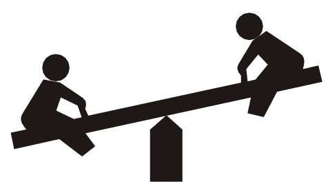

using CalculusWithJulia
using Plots; plotly()
using Roots
using QuadGK
using SymPy46 Center of mass
This section uses these add-on packages:

Figure 46.1 shows the game of seesaw. One where children earn an early appreciation for the effects of distance and relative weight. For children with equal weights, the seesaw will balance if they sit an equal distance from the center (on opposite sides, of course). However, with unequal weights that isn’t the case. If one child weighs twice as much, the other must sit twice as far.
The key relationship is that \(d_1 m_1 = d_2 m_2\). This come from physics, where the moment about a point is defined by the mass times the distance. This balance relationship says the overall moment balances out. When this is the case, then the center of mass is at the fulcrum point, so there is no impetus to move.
The center of mass is an old concept that often allows a possibly complicated relationship involving weights to be reduced to a single point. The seesaw is an example: if the center of mass is at the fulcrum the seesaw can balance.
In general, we use position of the mass, rather than use distance from some fixed fulcrum. With this, the center of mass for a finite set of point masses distributed on the real line, is defined by:
\[ \overline{\text{cm}} = \frac{m_1 x_1 + m_2 x_2 + \cdots + m_n x_n}{m_1 + m_2 + \cdots + m_n}. \]
Writing \(w_i = m_i / (m_1 + m_2 + \cdots + m_n)\), we get the center of mass is just a weighted sum: \(w_1 x_1 + \cdots + w_n x_n\), where the \(w_i\) are the relative weights.
With some rearrangement, we can see that the center of mass satisfies the equation:
\[ w_1 \cdot (x_1 - \overline{\text{cm}}) + w_2 \cdot (x_2 - \overline{\text{cm}}) + \cdots + w_n \cdot (x_n - \overline{\text{cm}}) = 0. \]
The center of mass is a balance of the weighted signed distances. This property of the center of mass being a balancing point makes it of intrinsic interest and can be—in the case of sufficient symmetry—easy to find.
Example
A set of weights sits on a dumbbell rack. They are spaced 1 foot apart starting with the 5, then the 10-, 15-, 25-, and 35-pound weights. Where is the center of mass?
We begin by letting \(m_1=5\), \(m_2=10\), \(m_3=15\), \(m_4=25\) and \(m_5=35.\) Our positions will be labeled \(x_i = i-1\), so the five-pound weight is at position \(0\) and the \(35\)-pound one at \(4\). The center of mass is then given by:
\[ \frac{5\cdot 0 + 10\cdot 1 + 15 \cdot 2 + 25 \cdot 3 + 35\cdot 4}{5 + 10 + 15 + 25 + 35} = \frac{255}{90} = 2.833 \]
If the \(25\)-pound weight is removed, how does the center of mass shift?
We could add the terms again, or just reduce from our sum:
\[ \frac{255 - 25\cdot 3}{90 - 25} = \frac{180}{65} = 2.769... \]
The center of mass shifts slightly, but since the removed weight was already close to the center of mass, the movement wasn’t much.
46.1 Center of mass of figures
Consider now a more general problem, the center of mass of a solid figure. We will restrict our attention to figures that can be represented by functions in the \(x-y\) plane which are two dimensional. For example, consider the region in the plane bounded by the \(x\) axis and the function \(1 - \lvert x \rvert\). This is triangle with vertices \((-1,0)\), \((0,1)\), and \((1,0)\).
Figure 46.2 shows that the graph is symmetric:
As the center of mass should be a balancing value, we would guess intuitively that the center of mass in the \(x\) direction will be \(x=0\).
But what should the center of mass formula be?
As with many formulas that will end up involving a derived integral, we start with a sum approximation. If the region is described as the area under the graph of \(f(x)\) between \(a\) and \(b\), then we can form a Riemann sum approximation, that is a choice of \(a = x_0 < x_1 < x_2 \cdots < x_n = b\) and points \(c_1\), \(\dots\), \(c_n\). If all the rectangles are made up of a material of uniform density, say \(\rho\), then the mass of each rectangle will be the area times \(\rho\), or \(\rho f(c_i) \cdot (x_i - x_{i-1})\), for \(i = 1, \dots , n\).
Generalizing from Figure 46.3 shows the center of mass for such an approximation will be:
\[ \begin{align*} &\frac{\rho f(c_1) (x_1 - x_0) \cdot x_1 + \rho f(c_2) (x_2 - x_1) \cdot x_1 + \cdots + \rho f(c_n) (x_n- x_{n-1}) \cdot x_{n-1}}{\rho f(c_1) (x_1 - x_0) + \rho f(c_2) (x_2 - x_1) + \cdots + \rho f(c_n) (x_n- x_{n-1})} \\ &= \frac{f(c_1) (x_1 - x_0) \cdot x_1 + f(c_2) (x_2 - x_1) \cdot x_1 + \cdots + f(c_n) (x_n- x_{n-1}) \cdot x_{n-1}}{f(c_1) (x_1 - x_0) + f(c_2) (x_2 - x_1) + \cdots + f(c_n) (x_n- x_{n-1})}. \end{align*} \]
But the top part is an approximation to the integral \(\int_a^b x f(x) dx\) and the bottom part the integral \(\int_a^b f(x) dx\). The ratio of these defines the center of mass.
DefinitionCenter of mass
The center of mass (in the \(x\) direction) of a region in the \(x-y\) plane described by the area under a (positive) function \(f(x)\) between \(a\) and \(b\) is given by
\[ \text{Center of mass} = \overline{\text{cm}}_x = \frac{\int_a^b xf(x) dx}{\int_a^b f(x) dx}. \]
For a region bounded between \(g(x) \le f(x)\) over \([a,b]\) the center of mass is given by:
\[ \overline{\text{cm}}_x = \frac{\int_a^b x(f(x)-g(x)) dx}{\int_a^b (f(x)-g(x)) dx}. \]
For the triangular shape, we have by the fact that \(f(x) = 1 - \lvert x \rvert\) is an even function that \(xf(x)\) will be odd, so the integral around \(-1,1\) will be \(0\). So the center of mass formula applied to this problem agrees with our expectation.
Example
What about the center of mass of the triangle formed by the line \(x=-1\), the \(x\) axis and \((1-x)/2\)? This too is defined between \(a=-1\) and \(b=1,\) but the center of mass will be negative, as a graph shows more mass to the left of \(0\) than the right:
The formulas give:
\[ \int_{-1}^1 xf(x) dx = \int_{-1}^1 x\cdot (1-x)/2 = \left(\frac{x^2}{4} - \frac{x^3}{6}\right)\Big|_{-1}^1 = -\frac{1}{3}. \]
The bottom integral is just the area (or total mass if the \(\rho\) were not canceled) and by geometry is \(1/2 (1)(2) = 1\). So \(\overline{\text{cm}}_x = -1/3\).
Example
Find the center of mass formed by the intersection of the parabolas \(y=1 - x^2\) and \(y=(x-1)^2 - 2\). Figure 46.5 shows that for the \(x\) direction, it is close to \(1/2\).
We first find the intersection points numerically, though where two quadratics can readily be solved algebraically:
h(x) = f1(x) - f2(x)
a,b = find_zeros(h, -3, 3)2-element Vector{Float64}:
-0.6180339887498948
1.618033988749895With these, the computation of the center of mass involves two integrations:
top = first(quadgk(x -> x * h(x), a, b))
bottom = first(quadgk(h, a, b))
cm = top / bottom0.5000000000000001Our guess from the diagram proves correct.
NoteNote
It proves convenient to use the -> notation for an anonymous function above, as our function h is not what is being integrated all the time, but some simple modification. If this isn’t palatable, a new function could be defined and passed along to quadgk.
Example
Consider a region bounded by a probability density function. (These functions are non-negative, and integrate to \(1\).) The center of mass formula simplifies to \(\int xf(x) dx\), as the denominator will be \(1\), and the answer is called the mean, and often denoted by the Greek letter \(\mu\).
For the probability density \(f(x) = e^{-x}\) for \(x\geq 0\) and \(0\) otherwise, find the mean.
We need to compute \(\int_{-\infty}^\infty xf(x) dx\), but in this case since \(f\) is \(0\) to the left of the origin, we just have:
\[ \mu = \int_0^\infty x e^{-x} dx = -(1+x) \cdot e^{-x} \Big|_0^\infty = 1 \]
For fun, we compare this to the median, which is the value \(M\) so that the total area is split in half. That is, the following formula is satisfied: \(\int_0^M f(x) dx = 1/2\). To compute, we have:
\[ \int_0^M e^{-x} dx = -e^{-x} \Big|_0^M = 1 - e^{-M}. \]
Solving \(1/2 = 1 - e^{-M}\) gives \(M=\log(2) = 0.69\cdots\), The median is to the left of the mean in this example.
NoteNote
In this example, we used an infinite region, so the idea of “balancing” may be a bit unrealistic, nonetheless, this intuitive interpretation is still a good one to keep this in mind. The point of comparing to the median is that the balancing point is to the right of where the area splits in half. Basically, the center of mass follows in the direction of the area far to the right of the median, as this area is skewed in that direction.
Example
Figure 46.6 shows a region formed by transformations of the function \(\phi(u) = e^{2(k-1)} - e^{2(k-u)}\), for some fixed \(k\) (\(k=3\) in the figure) between \(0\) and \(3\). The region is basically the graph of \(\phi(u)\) and the graph of its shifted value \(\phi(u+1)\), only truncated on the top and bottom.
We have
phi(u) = exp(2(k-1)) - exp(2(k-u))
f(u) = max(0, phi(u))
g(u) = min(f(u+1), f(k))g (generic function with 1 method)The center of mass of this figure is found with:
h(x) = g(x) - f(x)
top, _ = quadgk(x -> x*h(x), 0, k)
bottom, _ = quadgk(h, 0, k)
top/bottom0.9626852772498597This figure has constant slices of length \(1\) for fixed values of \(y\). If we were to approximate the values with blocks of height \(1\), then the center of mass would be to the left of \(1\)—for any \(k\), but the top most block would have an overhang to the right of \(1\)—out to a value of \(k\). That is, the blocks in Figure 46.7 should balance.
See this paper and its references for some background on this example and its extensions.
46.1.1 The \(y\) direction.
We can talk about the center of mass in the \(y\) direction too. Suppose our region is bounded by \(g(x) \le f(x)\) over \([a,b]\). The center of mass can be computed different ways. If the region can be described by two functions in the \(y\) direction, the same formulas as in the \(x\) direction can be used.
However, with the region as described, we can use this form
DefinitionCenter of mass in y direction
For a region bounded between \(g(x) \le f(x)\) over \([a,b]\), the center of mass in the \(y\) direction can be computed by:
\[ \overline{\text{cm}}_y = \frac{\int_a^b \frac{1}{2}(f(x)^2 - g(x)^2) dx}{\int_a^b (f(x) -g(x)) dx}. \]
This formula follows readily once two dimensional integrals are discussed.1
For example, consider, again, the triangle bounded by the line \(x=-1\), the \(x\) axis, and the line \(y=(1-x)/2\). In terms of describing this in \(y\), the function \(u(y)=2 -2y\) gives the total length of the horizontal slice (which comes from solving \(y=(1-x)/2\)for \(x\), the general method to find an inverse function, and subtracting \(-1\)) and the interval is \(y=0\) to \(y=1\). Thus our center of mass in the \(y\) direction will be
\[ \overline{\text{cm}}_y = \frac{\int_0^1 y (2 - 2y) dy}{\int_0^1 (2 - 2y) dy} = \frac{(2y^2/2 - 2y^3/3)\Big|_0^1}{1} = \frac{1}{3}. \]
Here the center of mass is below \(1/2\) as the bulk of the area is. (The bottom area is just \(1\), as known from the area of a triangle.)
Using the other formula, where \(f(x) = (1-x)/2\) and \(g(x)=0\), we have
\[ \begin{align*} \frac{1}{2} \int_{-1}^1 (f(x)^2 - g(x)^2) dx &= \frac{1}{2} \int_{-1}^1 \frac{(1-x)^2}{4} dx\\ &= \frac{1}{2}\frac{1}{4} \left(-\frac{(1-x)^3}{3}\right) \big|_{-1}^1\\ &= \frac{1}{24} \left((1-x)^3\right) \big|_1^{-1}\\ &= \frac{8}{24} - 0 = \frac{1}{3} \end{align*} \]
The total area is
\[ \int_{-1}^1 \frac{1-x}{2} dx = -\frac{(1-x)^2}{4}\big|_{-1}^1 = 0 - (-1) = 1 \]
Leaving, \(\overline{\text{cm}}_y = 1/3\), as before.
Example
More generally, consider a right triangle with vertices \((0,0)\), \((0,a)\), and \((b,0)\). The center of mass of this can be computed with the help of the equation for the line that forms the hypotenuse: \(x/b + y/a = 1\). We find the center of mass symbolically in the \(y\) variable by writing \(f(x) = a \cdot (1 - x)/b\) and \(g(x) = 0\)
@syms a b x y
fx = only(solve(x/b + y/a ~ 1, y))
(1//2) * integrate(fx^2, (x, 0, b)) / integrate(fx, (x, 0, b))\(\frac{a}{3}\)
The answer involves \(a\) linearly, but not \(b\). If we find the center of mass in \(x,\) we could do something similar:
integrate(x*fx, (x, 0, b)) / integrate(fx, (x, 0, b))\(\frac{b}{3}\)
But really, we should have just noted that simply by switching the labels \(a\) and \(b\) in the diagram we could have discovered this formula.
NoteNote
The centroid of a region in the plane is just \((\overline{\text{cm}}_x, \overline{\text{cm}}_y)\). This last fact says the centroid of the right triangle is just \((b/3, a/3)\). The centroid can be found by other geometric means. The link shows the plumb line method. For triangles, the centroid is also the intersection point of the medians, the lines that connect a vertex with its opposite midpoint.
Example
Compute the \(x\) and \(y\) values of the center of mass of the half circle described by the area below the function \(f(x) = \sqrt{1 - x^2}\) and above the \(x\)-axis.
As \(f(x)\) is even, \(x \cdot f(x)\) would be odd, so the center of mass in the \(x\) direction is \(0\).
The value for \(\overline{\text{cm}}_y\) will certainly be less than \(1/2\) as the circle narrows as \(y\) increases to \(1\). The exact value is given by:
\[ \begin{align*} \frac{1}{2}\frac{2}{\pi} \cdot \int_{-1}^1 (\sqrt{1 - x^2})^2 dx &= \frac{1}{\pi} \int_{-1}^1 ( 1 - x^2) dx\\ &= \frac{1}{\pi} (x - \frac{x^3}{3})\big|_{-1}^1 = \frac{1}{\pi}\frac{4}{3}\\ &= 0.424413\cdots. \end{align*} \]
The value \(2/\pi\) comes from the area of the figure being the area of half the unit circle, which has area \(\pi\).
Example
A disc of radius \(2\) is centered at the origin, as a disc of radius \(1\) is bored out between \(y=0\) and \(y=1\). Find the resulting center of mass.
Figure 46.8 shows that this could be complicated, especially for \(y > 0\), as we need to describe the length of the red lines below for \(-2 < y < 2\):
![]()
We can see that \(\overline{\text{cm}}_x = 0\), by symmetry.
To compute \(\overline{\text{cm}}_y\) we choose to find \(f(y)\), which will depend on the value of \(y\) between \(-2\) and \(2\). The outer circle is \(x^2 + y^2 = 4\), the inner circle \(x^2 + (y-1)^2 = 1\). When \(y < 0\), \(f(y)\) is the distance across the outer circle or, \(2\sqrt{4 - y^2}\). When \(y \geq 0\), \(f(y)\) is twice the distance from the bigger circle to the smaller, of \(2(\sqrt{4 - y^2} - \sqrt{1 - (y-1)^2})\).
We use this to compute:
f(y) = y < 0 ? 2 * sqrt(4 - y^2) : 2 * (sqrt(4 - y^2)- sqrt(1 - (y-1)^2))
top, _ = quadgk(y -> y * f(y), -2, 2)
bottom, _ = quadgk(f, -2, 2)
top/bottom-0.3333333333594305The nice answer of \(-1/3\) makes us think there may be a different way to compute this quantity.
Indeed, let \(A\) be the big circle with the bite taken out, \(B\) be the smaller circle, \(C\) the big circle. Clearly, the center of mass of \(C\) in the \(y\) direction is \(0\) and the center of mass of \(B\) in the \(y\) direction is \(1\). The center of mass of \(C\) is the weighted average of the center of mass of \(A\) plus that of \(B\):
\[ \overline{\text{cm}_C} = \frac{4\pi - \pi}{4\pi} \overline{\text{cm}_A} + \frac{\pi}{4\pi}\overline{\text{cm}_B} \]
Or
\[ 0 = \frac{3}{4}\overline{\text{cm}_A} + \frac{1}{4} \]
which is solved by \(\overline{\text{cm}_A}=-1/3\).
This above works as:
RelationshipCenter of mass of complex shapes
If a complicated shape can be partitioned into simpler shapes for which the center of mass can be computed, then the resulting center of mass is the weighted sum of the centers of mass of the simpler shapes. The weights are given by the relative masses.2
46.2 Questions
Question
Find the center of mass in the \(x\) variable for the region bounded by parabola \(x=4 - y^2\) and the \(y\) axis.
Question
Find the center of mass in the \(x\) variable of the region in the first and fourth quadrants bounded by the ellipse \((x/2)^2 + (y/3)^2 = 1\).
Question
Find the center of mass in the \(x\) variable of the region in the first quadrant bounded by the function \(f(x) = x^3(1-x)^4\).
Question
Let \(k\) and \(\lambda\) be parameters in \((0, \infty)\). The Weibull density is a probability density on \([0, \infty)\) (meaning it is \(0\) when \(x < 0\) satisfying:
\[ f(x) = \frac{k}{\lambda}\left(\frac{x}{\lambda}\right)^{k-1} \exp(-(\frac{x}{\lambda})^k) \]
For \(k=2\) and \(\lambda = 2\), compute the mean. (The center of mass, assuming the total area is \(1\).)
Question
The logistic density depends on two parameters \(m\) and \(s\) and is given by:
\[ f(x) = \frac{1}{4s} \text{sech}(\frac{x-\mu}{2s})^2, \quad -\infty < x < \infty. \]
(Where \(\text{sech}\) is the hyperbolic secant, implemented in julia through sech.)
For \(\mu=2\) and \(s=4\) compute the mean, or center of mass, of this density.
Question
A region is formed by intersecting the area bounded by the circle \(x^2 + y^2 = 1\) that lies above the line \(y=3/4\). Find the center of mass in the \(y\) direction (that of the \(x\) direction is \(0\) by symmetry).
Question
Find the center of mass in the \(y\) direction of the area bounded by the cosine curve and the \(x\) axis between \(-\pi/2\) and \(\pi/2\).
Question
Figure 46.9 visualizes a penny, nickel, dime and quarter that are stacked so that their right most edges align and are centered so that the center of mass in the \(y\) direction is \(0\). Find the center of mass in the \(x\) direction.
You will need some specifications, such as the one from the US Mint in Table 46.1.
| diameter(in) | weight(gms) | |
|---|---|---|
| penny | 0.750 | 2.500 |
| nickel | 0.835 | 5.000 |
| dime | 0.705 | 2.268 |
| quarter | 0.955 | 5.670 |
(Hint: Though this could be done with integration, it is easier to treat each coin as a single point (its centroid) with the given mass and then apply the center of mass formula for sums.)
If \(\rho(x,y)\) describes the density of a region \(A\), then the center of mass in the \(y\) direction is found by \(\iint_A y \rho(x,y) dy dx / \iint_A \rho(x,y) dy dx\). With constant density, as assumed herein, and the region described by \(g(x) \le f(x)\), the top integral becomes \(\int_a^b \int_{g(x)}^{f(x)} y dy dx = \int_a^b (1/2)\left(f(x)^2 - g(x)^2\right) dx\). Similarly. for the \(x\) direction, the top integral is \(\iint x \rho(x,y) dy dx\) which becomes under these assumptions \(\int_a^b \int_{g(x)}^{f(x)} x dy dx = \int_a^b x\left(f(x) - g(x)\right) dx\).↩︎
Again, this follows readily from the center of mass formula in two dimensions. For example, if \(A\) can be partitioned into \(B\) and \(C\) then we have in the \(y\) direction: \[ \begin{align*} \overline{\text{cm}}_A &= \frac{\iint_A y \rho da}{\iint_A \rho da}\\ &= \frac{\iint_B y \rho da}{\iint_A \rho da} + \frac{\iint_C y \rho da}{\iint_A \rho da}\\ &= \frac{\iint_B y \rho da}{\iint_B \rho da} \cdot \frac{\iint_B \rho da}{\iint_A \rho da} + \frac{\iint_C y \rho da}{\iint_C \rho da} \cdot \frac{\iint_C \rho da}{\iint_A \rho da}\\ &= \overline{\text{cm}}_B \frac{\iint_B\rho da}{\iint_A \rho da} + \overline{\text{cm}}_C \frac{\iint_C \rho da}{\iint_A \rho da} \end{align*} \]↩︎